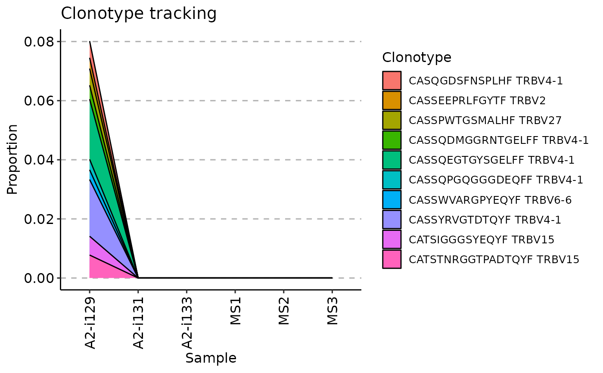
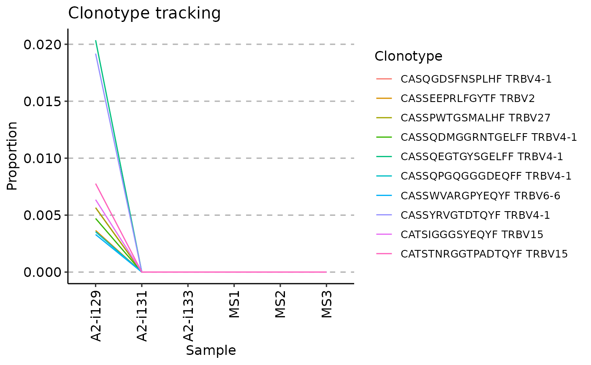
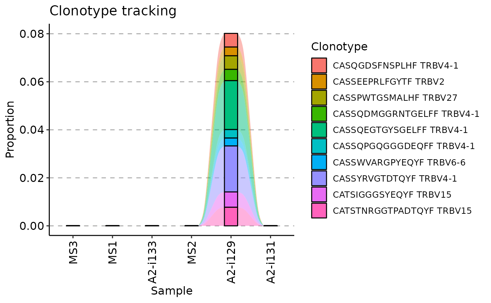

Track the temporal dynamics of clonotypes in repertoires. For example, tracking across multiple time points after vaccination.
Note: duplicated clonotypes are merged and their counts are summed up.
trackClonotypes(.data, .which = list(1, 15), .col = "aa", .norm = TRUE)
Arguments
| .data | The data to process. It can be a data.frame, a data.table, or a list of these objects. Every object must have columns in the immunarch compatible format. immunarch_data_format Competent users may provide advanced data representations: DBI database connections, Apache Spark DataFrame from copy_to or a list of these objects. They are supported with the same limitations as basic objects. Note: each connection must represent a separate repertoire. |
|---|---|
| .which | An argument that regulates which clonotypes to choose for tracking. There are three options for this argument: 1) pass a list with two elements 2) pass a character vector of sequences to take from all data frames; 3) pass a data frame (data table, database) with one or more columns - first for sequences, and other for gene segments (if applicable). See the "Examples" below with examples for each option. |
| .col | A character vector of length 1. Specifies an identifier for a column, from which the function chooses clonotype sequences. Specify "nt" for nucleotide sequences, "aa" for amino acid sequences, "aa+v" for amino acid sequences and Variable genes, "nt+j" for nucleotide sequences with Joining genes, or any combination of the above. Used only if ".which" has option 1) or option 2). |
| .norm | Logical. If TRUE then use Proportion instead of the number of Clones per clonotype to store in the function output. |
Value
Data frame with input sequences and counts or proportions for each of the input repertoire.
Examples
# Load an example data that comes with immunarch data(immdata) # Make the data smaller in order to speed up the examples immdata$data <- immdata$data[c(1, 2, 3, 7, 8, 9)] immdata$meta <- immdata$meta[c(1, 2, 3, 7, 8, 9), ] # Option 1 # Choose the first 10 amino acid clonotype sequences # from the first repertoire to track tc <- trackClonotypes(immdata$data, list(1, 10), .col = "aa") # Choose the first 20 nucleotide clonotype sequences # and their V genes from the "MS1" repertoire to track tc <- trackClonotypes(immdata$data, list("MS1", 20), .col = "nt+v") # Option 2 # Choose clonotypes with amino acid sequences "CASRGLITDTQYF" or "CSASRGSPNEQYF" tc <- trackClonotypes(immdata$data, c("CASRGLITDTQYF", "CSASRGSPNEQYF"), .col = "aa") # Option 3 # Choose the first 10 clonotypes from the first repertoire # with amino acid sequences and V segments target <- immdata$data[[1]] %>% select(CDR3.aa, V.name) %>% head(10) tc <- trackClonotypes(immdata$data, target) # Visualise the output regardless of the chosen option # Therea are three way to visualise it, regulated by the .plot argument vis(tc, .plot = "smooth")#> Warning: id.vars and measure.vars are internally guessed when both are 'NULL'. All non-numeric/integer/logical type columns are considered id.vars, which in this case are columns [CDR3.aa, V.name, ...]. Consider providing at least one of 'id' or 'measure' vars in future.#> Warning: The `.dots` argument of `group_by()` is deprecated as of dplyr 1.0.0.#> Warning: id.vars and measure.vars are internally guessed when both are 'NULL'. All non-numeric/integer/logical type columns are considered id.vars, which in this case are columns [CDR3.aa, V.name, ...]. Consider providing at least one of 'id' or 'measure' vars in future.#> Warning: id.vars and measure.vars are internally guessed when both are 'NULL'. All non-numeric/integer/logical type columns are considered id.vars, which in this case are columns [CDR3.aa, V.name, ...]. Consider providing at least one of 'id' or 'measure' vars in future.# Visualising timepoints # First, we create an additional column in the metadata with randomly choosen timepoints: immdata$meta$Timepoint <- sample(1:length(immdata$data)) immdata$meta#> # A tibble: 6 × 7 #> Sample ID Sex Age Status Lane Timepoint #> <chr> <chr> <chr> <dbl> <chr> <chr> <int> #> 1 A2-i129 C1 M 11 C A 1 #> 2 A2-i131 C2 M 9 C A 5 #> 3 A2-i133 C4 M 16 C A 4 #> 4 MS1 MS1 M 12 MS C 6 #> 5 MS2 MS2 M 30 MS C 3 #> 6 MS3 MS3 M 8 MS C 2# Next, we create a vector with samples in the right order, # according to the "Timepoint" column (from smallest to greatest): sample_order <- order(immdata$meta$Timepoint) # Sanity check: timepoints are following the right order: immdata$meta$Timepoint[sample_order]#> [1] 1 2 3 4 5 6# Samples, sorted by the timepoints: immdata$meta$Sample[sample_order]#> [1] "A2-i129" "MS3" "MS2" "A2-i133" "A2-i131" "MS1"#> Warning: id.vars and measure.vars are internally guessed when both are 'NULL'. All non-numeric/integer/logical type columns are considered id.vars, which in this case are columns [CDR3.aa, V.name, ...]. Consider providing at least one of 'id' or 'measure' vars in future.